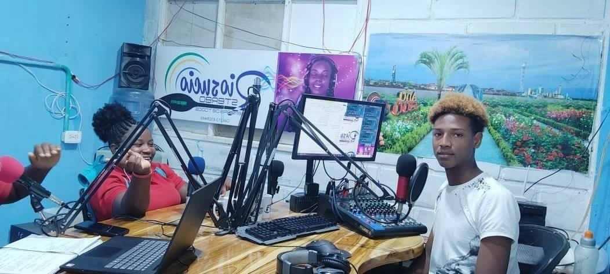

La Voz de la Juventud
Los jóvenes del Bajo Atrato tienen historias, saberes y propuestas, pero por mucho tiempo no tuvieron un micrófono. En un municipio donde la mayoría de las comunidades viven a orillas del río y el internet es escaso, la radio es el medio que llega a todas partes, también a las veredas.
Por eso nació La Voz de la Juventud, el programa radial de la plataforma, al aire desde 2021 los domingos de 7 a 9 de la mañana por Riosucio Estéreo 98.3 FM. Es un espacio hecho por jóvenes y para jóvenes, con un lema claro: noticia, opinión y participación juvenil.
Cada emisión trae los titulares de la semana, una reflexión, El Contexto para explicar a fondo un tema, Cara a Cara con entrevistas, Verdad o Mito para desmontar rumores y una Agenda de Oportunidades con becas y convocatorias. Por sus micrófonos la comunidad conoció la reactivación de la plataforma, el abandono de la Casa de la Juventud y las gestiones de los jóvenes ante las entidades.
- Riosucio Estéreo 98.3 FM
- Domingos 7–9 a. m.
- Con apoyo de AFRODES, ONIC y USAID
